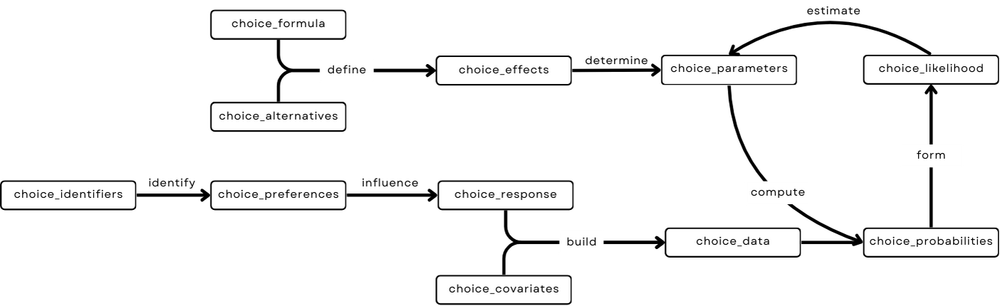

The choicedata package simplifies working with choice data in R.
Package design
The package breaks down the process of modeling choice data into a series of steps. Each step is represented by an object that contains the necessary information for the subsequent step.

choice_formula: the choice model formula.choice_alternatives: the set of choice alternatives.choice_effects: the choice effects, defined bychoice_alternativesandchoice_formula.choice_parameters: the model parameters, determined bychoice_effectsand estimated viachoice_likelihood.choice_identifiers: the identifiers for deciders and choice occasions.choice_preferences: the deciders’ choice preferences, identified bychoice_identifiers.choice_responses: the choice responses, influenced bychoice_preferences.choice_covariates: the choice covariates.choice_data: the choice data, built bychoice_covariatesandchoice_responses.choice_probabilities: the choice probabilities, computed fromchoice_dataandchoice_parameters.choice_likelihood: the likelihood of the choice model, formed bychoice_probabilities.
The objects are designed to be modular and can be combined in various ways to create a range of modeling workflows.
Examples
Empirical data
The travel_mode_choice data set contains the revealed preferences of 210 travelers choosing between plane, train, bus, and car. We can transform the data from long to wide format, or construct model design matrices:
library("choicedata")
travel_mode_choice
#> # A tibble: 840 × 8
#> individual mode choice wait cost travel income size
#> <int> <chr> <int> <int> <int> <int> <int> <int>
#> 1 1 plane 0 69 59 100 35 1
#> 2 1 train 0 34 31 372 35 1
#> 3 1 bus 0 35 25 417 35 1
#> 4 1 car 1 0 10 180 35 1
#> 5 2 plane 0 64 58 68 30 2
#> 6 2 train 0 44 31 354 30 2
#> 7 2 bus 0 53 25 399 30 2
#> 8 2 car 1 0 11 255 30 2
#> 9 3 plane 0 69 115 125 40 1
#> 10 3 train 0 34 98 892 40 1
#> # ℹ 830 more rows
long_to_wide(
data_frame = travel_mode_choice,
column_alternative = "mode",
column_decider = "individual"
)
#> # A tibble: 210 × 16
#> individual income size wait_plane wait_train wait_bus wait_car cost_plane
#> <int> <int> <int> <int> <int> <int> <int> <int>
#> 1 1 35 1 69 34 35 0 59
#> 2 2 30 2 64 44 53 0 58
#> 3 3 40 1 69 34 35 0 115
#> 4 4 70 3 64 44 53 0 49
#> 5 5 45 2 64 44 53 0 60
#> 6 6 20 1 69 40 35 0 59
#> 7 7 45 1 45 34 35 0 148
#> 8 8 12 1 69 34 35 0 121
#> 9 9 40 1 69 34 35 0 59
#> 10 10 70 2 69 34 35 0 58
#> # ℹ 200 more rows
#> # ℹ 8 more variables: cost_train <int>, cost_bus <int>, cost_car <int>,
#> # travel_plane <int>, travel_train <int>, travel_bus <int>, travel_car <int>,
#> # choice <chr>
mode_effects <- choice_effects(
choice_formula = choice_formula(
formula = choice ~ cost | income + size | travel + wait,
error_term = "probit"
),
choice_alternatives = choice_alternatives(
J = 4,
alternatives = unique(travel_mode_choice$mode)
)
)
mode_data <- choice_data(
data_frame = travel_mode_choice,
format = "long",
column_choice = "choice",
column_decider = "individual",
column_alternative = "mode",
column_ac_covariates = c("income", "size"),
column_as_covariates = c("wait", "cost", "travel")
)
design_matrices <- design_matrices(mode_data, mode_effects)
design_matrices[[1]]
#> cost income_car income_plane income_train size_car size_plane size_train
#> bus 25 0 0 0 0 0 0
#> car 10 35 0 0 1 0 0
#> plane 59 0 35 0 0 1 0
#> train 31 0 0 35 0 0 1
#> ASC_car ASC_plane ASC_train travel_bus travel_car travel_plane
#> bus 0 0 0 417 0 0
#> car 1 0 0 0 180 0
#> plane 0 1 0 0 0 100
#> train 0 0 1 0 0 0
#> travel_train wait_bus wait_car wait_plane wait_train
#> bus 0 35 0 0 0
#> car 0 0 0 0 0
#> plane 0 0 0 69 0
#> train 372 0 0 0 34Simulated choice
generate_choice_data() makes it straightforward to simulate choice data. The example below simulates 200 ranking tasks with three alternatives and recovers the data-generating parameters via numerical optimization of the likelihood:
library("choicedata")
set.seed(1)
sim_effects <- choice_effects(
choice_formula = choice_formula(
formula = choice ~ A | B | C,
error_term = "logit"
),
choice_alternatives = choice_alternatives(
J = 3,
alternatives = c("A", "B", "C")
)
)
sim_parameters <- generate_choice_parameters(sim_effects)
(sim_data <- generate_choice_data(
choice_effects = sim_effects,
choice_identifiers = generate_choice_identifiers(N = 200),
choice_parameters = sim_parameters,
choice_type = "ranked"
))
#> # A tibble: 200 × 13
#> deciderID occasionID choice B choice_A choice_B choice_C A_A
#> * <chr> <chr> <chr> <dbl> <int> <int> <int> <dbl>
#> 1 1 1 B 1.12 2 1 3 0.576
#> 2 2 1 B 0.782 3 1 2 -0.0449
#> 3 3 1 B -0.478 2 1 3 0.0746
#> 4 4 1 B -0.415 3 1 2 0.418
#> 5 5 1 B 0.697 2 1 3 -0.394
#> 6 6 1 B 0.881 2 1 3 0.557
#> 7 7 1 B -0.367 3 1 2 0.398
#> 8 8 1 B 0.0280 3 1 2 -1.04
#> 9 9 1 C 0.476 3 2 1 -0.743
#> 10 10 1 B 0.00111 2 1 3 -0.710
#> # ℹ 190 more rows
#> # ℹ 5 more variables: A_B <dbl>, A_C <dbl>, C_A <dbl>, C_B <dbl>, C_C <dbl>
sim_likelihood <- choice_likelihood(
choice_data = sim_data,
choice_effects = sim_effects
)
objective <- sim_likelihood$objective
true_vector <- switch_parameter_space(
choice_parameters = sim_parameters,
choice_effects = sim_effects
)
fit <- stats::optim(
par = stats::rnorm(length(true_vector)),
fn = function(par) {
objective(choice_parameters = par, logarithm = TRUE, negative = TRUE)
}
)
estimated_parameters <- switch_parameter_space(
choice_parameters = fit$par,
choice_effects = sim_effects
)
data.frame(dgp = true_vector, estimated = fit$par)
#> dgp estimated
#> beta_1 -1.9810209 -2.04179163
#> beta_2 0.5807312 0.04789289
#> beta_3 -2.6424897 -3.05406623
#> beta_4 5.0447208 4.82873952
#> beta_5 1.0419951 0.99061141
#> beta_6 -2.5945488 -2.75745549
#> beta_7 1.5413860 1.21554512
#> beta_8 2.3347877 1.96729481Installation
You can install the released package version from CRAN with:
install.packages("choicedata")Related work
{Rprobit} (Bauer et al. 2023) provides maximum approximated composite marginal likelihood estimation for efficient probit choice modeling.
RprobitB (Oelschläger and Bauer 2025) provides Bayesian tools for estimating probit models.
Contact
You have a question, found a bug, request a feature, want to give feedback, or like to contribute? Please file an issue on GitHub.